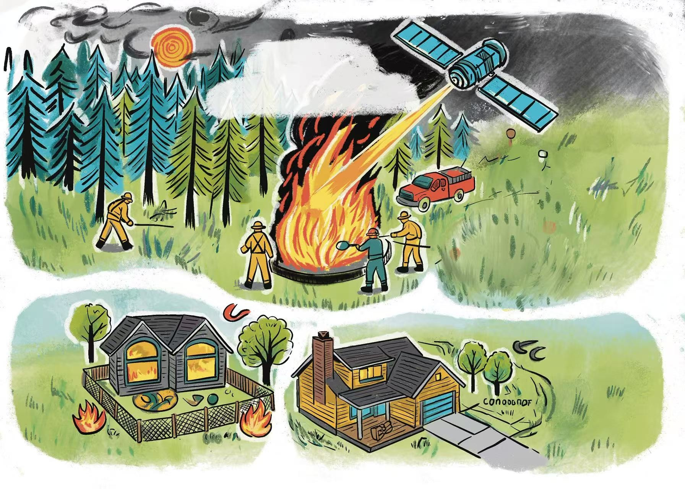
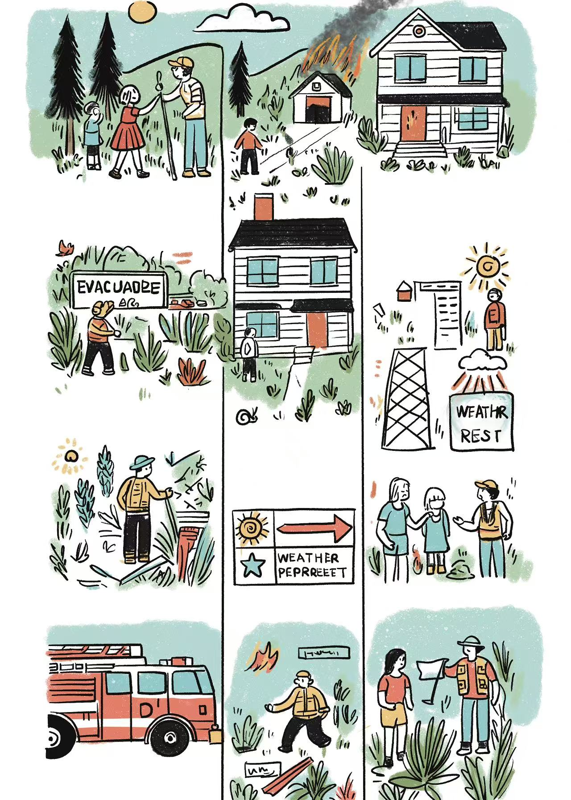

Wildfires have become one of the most urgent environmental challenges globally, and the recurring crises in California offer valuable lessons based on recent research.
Wildfires have become one of the most urgent environmental challenges globally, and the recurring disasters in California are not accidental - they are the result of a dangerous mixture of weather patterns, human activities, and drastically changing ecosystems. Let me introduce to you how these elements interact based on recent research.
Starting with the Sierra Nevada region, there's been a dramatic shift in where fires occur. Back in 2015, Dr. Schwartz made a striking discovery: since the 1980s, fire-prone zones had climbed uphill by about 65%. This is directly related to the reduction of snow cover (down nearly 30%) and early snowmelt. The p-value here is less than 0.01, indicating there's less than 1% chance this pattern is random. Low altitude trees like yellow pine are now invading areas that were once too cold for them, forming "fuel highways"—a fuel highway is like a continuous dry vegetation trail that rolls out the red carpet for wildfires.
Gutierrez and Randerson's (2021) research provides us with hard numbers for the stark reality. Their analysis of satellite data from 2015 to 2020 revealed some concerning facts: for every one degree Celsius increase in summer temperatures, fire outbreaks increase by 18-22%. The R-squared value here is 0.76, indicating strong correlation. The following is what happens during extreme drought: During the Santa Ana wind event Californians are well aware of these dry gusts, plants can lose more than one-third of their moisture in just three days, (once saw a fire expert demonstrate this - he took a dry Manzanita branch and broke it in half. When the vegetation humidity drops from 90% to under 60%, plants become perfect fire starters).
But high temperatures alone cannot explain California's fire nightmare. The wind is like the blowtorch of nature. Brandon's weather analysis for 2023 shows that nearly 80% of catastrophic fires since 2015 have involved either Diablo or Santa Ana winds. These are not gentle sea winds - we're talking about sustained speeds of over 55 kilometers per hour. Terrifying is how far these winds energize fire: burning embers >3.2 kilometers ahead of the main fire. It's like lighting a match at Fisherman's Wharf in San Francisco and then discovering a fire at Oracle Park across town. Compared to fires without strong winds, this means a 40% increase in spread speed.
The science reveals three key factors: constantly changing ecosystems turning mountains into powder kegs, rising temperatures baking out landscapes, and fierce winds acting as boosters for fires. But these elements do not exist in isolation. The dried vegetation caused by climate change will become even more fire-prone when the winds arrive. It's more like the domino effect of disaster - if one piece is knocked down, the entire system will collapse.
Recent events have proven this. The Creek Fire in the Sierra Nevada Mountains in 2020 burned over 370,000 acres of land, and these three factors worked together in a devastating way. Record temperatures in August caused the forest to dry up, while the winds in September spread flames and wildfires to high-altitude areas previously considered safe. Firefighters now describe such blazes as "climate fires" - a new type of disaster whose behavior is unpredictable compared to historical patterns.
What is truly concerning is how this learning from California wildfires can be applied globally. The bushfires in Australia in 2019-2020 showed a similar pattern - forests under drought stress, extreme heat waves, and abnormal wind behavior. Even Mediterranean countries are now facing an extended fire season that matches California's timetable. Climate change not only warms the Earth, but it is also rewriting the rulebook on how fires start and spread.
Prevention Strategies 🛡️

Fire prevention strategies require community awareness and scientific approaches
2.1 Reimagining Fire Prevention: Three Science-Backed Strategies
When it comes to wildfire prevention, we are not powerless—modern research provides us with powerful tools if we know how to utilize them. Let's break down three game changing methods that can truly save neighborhoods.
2.2 Climate-Adaptive Forestry: Working With Nature
Imagine that a firefighter wants to extinguish a wildfire. This is what Schwartz's 2015 fuel outage strategy envisioned. By strategically removing 40-60% of trees in key areas—which can be seen as pruning forests—we can reduce the spread of canopy fires by more than half. But there is a clever part here: it is not clear. Forestry crews strategically separate the healthiest trees like chess pieces, forming a natural fire barrier.
In practice, this means that staff may reduce fire-prone species such as white fir while protecting old pine trees. Plus controlling burns every 5-7 years - like the ones displayed in Sequoia National Park last fall - we can achieve a win-win situation. Low intensity controlled burns simulate the natural fire cycle, reducing the stock of dead wood while fertilizing the soil. It's like teaching forests fire prevention without losing their ecological mojo.
2.3 Early Warning Systems: Predicting Fire Before It Starts
Do you remember how the weather forecast predicts rainfall now? We are entering the era of fire prevention. Gutierrez and Randerson's breakthrough in 2021 allowed us to detect fire problem 72 hours in advance, zooming in to 1 square kilometer blocks - which is precise enough.
Here's how it works: satellites track "thermal stress points" where temperatures cross the critical threshold (meaning: 35°C+<20% humidity). Last summer, the system marked a high-risk area near Bear Lake 48 hours before lightning strikes. Firefighters have pre-deployed resources and controlled the potential disaster area within 12 acres. The accuracy of pilot testing is 89%, which is like having a fire crystal ball—although meteorologists admit that they still cannot predict human-caused fires from careless campers.
2.4 Wind-Smart Communities: Building Like We Mean It
California's infamous Diablo winds turn houses into matchboxes—unless we design smarter. Brandon's 2023 wind maps reveal invisible "fire highways" where gusts regularly exceed 25 km/h. In these zones, enforcing 30m defensible spaces isn't just regulation—it's survival math. Bleiman's 2023 data shows this buffer slashes home ignition odds from 43% to 12%.But what does 30m actually look like? Imagine:
- Removing flammable juniper bushes near windows
- Replacing wood decks with stone patios
- Installing spark-proof attic vents (those tiny mesh screens save entire roofs)
Santa Barbara's recent reconstruction after the 2018 fire demonstrates this approach. Houses rebuilt with refractory materials and appropriate spacing survived intact in the 2023 fire, while non-compliant houses burned like sparks.
2.5 The Bigger Picture
These strategies work best when combined. A thinned forest (Strategy 1) gives early warning (Strategy 2), while buildings with wind awareness (Strategy 3) protect the most important thing - the living community. This is not about eliminating fires - which is impossible - but about creating a landscape where fires are small and sustainable.
Community Prevention Measures 🏠

Community-based initiatives are essential for effective wildfire prevention
Community-Based Prevention Initiatives
Effective wildfire prevention extends beyond individual actions to community-wide efforts. These initiatives build both physical defenses and social connections that prove invaluable during emergencies.
Neighborhood Cleanup Saturdays
Actively participate in your local neighborhood organization 'Fire Preparedness Saturday' every month. Every time you rotate the house - bring your own gardening gloves and pruning shears. Turn it into a social event: 9 am to 1 pm for clearing dead vegetation from high-risk areas, then 1-3 PM: Group lunch/BBQ. Great chance to discuss wildfire safety knowledge.
Schoolyard Fuel Reduction
Partner with local schools to create kid-friendly fire breaks - students use class projects to plant flower beds (such as using fire-resistant plants to spell out the school name). Science class measures the thickness of combustible material accumulation on campus and submits the data to the fire department.
Coffee Shop Preparedness Hubs
Turn local cafés into micro-training centers: coffee cup overprinted QR code, scan the code to watch 5-minute escape route planning tutorial. Free seminar on "Espresso Evacuation Drills" every Wednesday at 10am. Points reward: Exchange photos of dead branches cleared by yourself for free refills.
Senior Support Networks
Mobilize youth groups to assist vulnerable neighbors: middle school students help the elderly clean up potential fuel sources (assign GoPro to record the process as community service credits). Create a graphic and textual version of the 'Disaster Prevention Checklist for the Elderly', with enlarged font and icon-based instructions for those with vision issues.